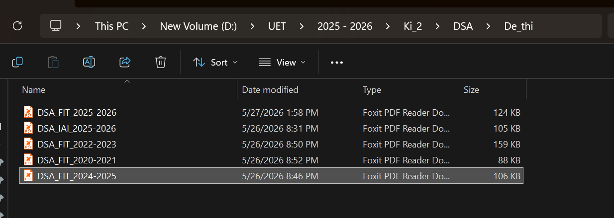

Đối với một sinh viên ngành Công nghệ Thông tin, việc quản lý dữ liệu không chỉ dừng lại ở thao tác "Tạo thư mục" cơ bản, mà phải hướng tới việc xây dựng một Kiến trúc thông tin mang tính quy mô, dễ dàng mở rộng trong suốt 4 năm học. Trọng tâm của hệ thống này là nguyên tắc: "Có thể truy xuất bất kỳ tệp tin nào trong tối đa 3 lần nhấp chuột (3-Click Rule)".
Dựa trên kiến trúc quản lý thực tế trên thiết bị của tôi (ổ đĩa D:), hệ thống thư mục được phân cấp theo cấu trúc hình cây từ vĩ mô đến vi mô để triệt tiêu hoàn toàn sự hỗn loạn dữ liệu. Ví dụ:
UET2025 - 2026Ki_2DSA (Data Structures and Algorithms - Cấu trúc Dữ liệu và Giải thuật)De_thi (Dùng để lưu trữ toàn bộ đề thi qua các năm của môn học)
Việc đặt tên file tùy tiện gây khó khăn rất lớn trong việc tra cứu lại tài liệu cũ. Để khắc phục, tôi đã áp dụng bộ quy tắc chuẩn hóa với cú pháp rõ ràng, cụ thể đối với thư mục lưu trữ Đề thi:
[Mã_Môn]_[Khoa]_[Năm_Học]
DSA_FIT (Khoa Công nghệ thông tin) và DSA_IAI (viện Trí tuệ Nhân tạo) giúp phân định rõ ràng chuẩn đầu ra và độ khó của đề thi.2020-2021, 2022-2023, 2024-2025 cho phép các tệp tin tự động sắp xếp theo thứ tự thời gian, hỗ trợ việc ôn tập các đề thi gần nhất một cách nhanh chóng._ và dấu gạch ngang - thay cho khoảng trắng và tiếng Việt có dấu, đảm bảo tệp tin không bị lỗi đường dẫn khi đẩy lên đám mây hoặc chia sẻ đa nền tảng.Việc thiết lập và tuân thủ nghiêm ngặt các thao tác cơ bản với hệ thống tệp tin đã giúp tôi tiết kiệm ít nhất 20% thời gian tìm kiếm tài nguyên hàng tuần. Tư duy tổ chức dữ liệu minh bạch, khoa học này không chỉ đáp ứng hoàn hảo yêu cầu của môn học, mà còn tạo lập nền móng vững chắc cho thói quen làm việc chuyên nghiệp trong các dự án Công nghệ Thông tin sau này.